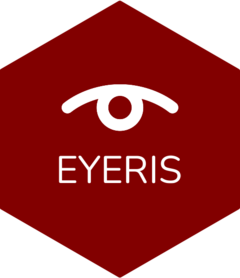
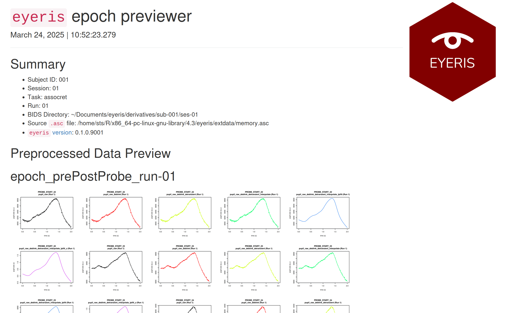
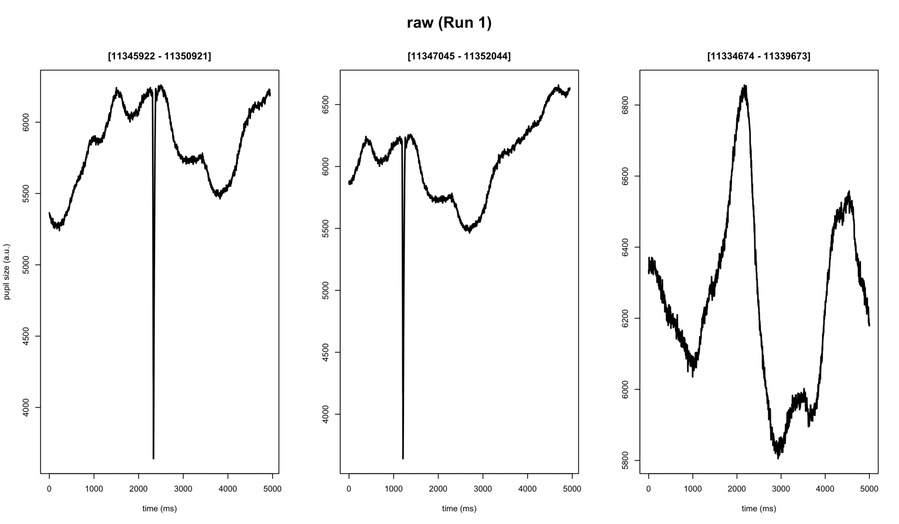
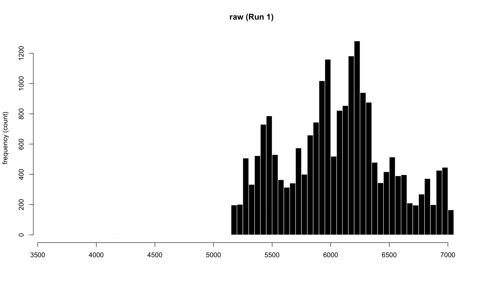

eyeris: A flexible, extensible, and reproducible pupillometry preprocessing framework in R
Motivation
Despite decades of pupillometry research, many established packages and workflows unfortunately lack design principles based on (F)indability (A)ccessbility (I)nteroperability (R)eusability (FAIR) principles. eyeris, on the other hand follows a thoughtful design philosophy that results in an intuitive, modular, performant, and extensible pupillometry data preprocessing framework. Much of these design principles were heavily inspired by Nipype.
eyeris also provides a highly opinionated pipeline for tonic and phasic pupillometry preprocessing (inspired by fMRIPrep). These opinions are the product of many hours of discussions from core members and signal processing experts from the Stanford Memory Lab (Shawn Schwartz, Mingjian He, Haopei Yang, Alice Xue, and Anthony Wagner).
eyeris also introduces a BIDS-like structure for organizing derivative (preprocessed) pupillometry data, as well as an intuitive workflow for inspecting preprocessed pupillometry epochs within beautiful, interactive HTML report files (see demonstration below ⬇️)!

Installation
You can install the development version of eyeris from GitHub with:
# install.packages("devtools")
devtools::install_github("shawntz/eyeris")or
# install.packages("pak")
pak::pak("shawntz/eyeris")Example
the glassbox() “prescription” function
This is a basic example of how to use eyeris out of the box with our very opinionated set of steps and parameters that one should start out with when preprocessing pupillometry data. Critically, this is a “glassbox” – as opposed to a “blackbox” – since each step and parameter implemented herein is fully open and accessible to you. We designed each pipeline step / function to be like legos – they are intentionally and carefully designed in a way that allows you to flexibly construct and compare different pipelines.
We hope you enjoy! -shawn
set.seed(32)
library(eyeris)
demo_data <- system.file("extdata", "memory.asc", package = "eyeris")
eyeris_preproc <- glassbox(
demo_data,
detrend_data = F,
lpfilt = list(plot_freqz = T)
)
#> ✔ [ OK ] - Running eyeris::load_asc()
#> ✔ [ OK ] - Running eyeris::deblink()
#> ✔ [ OK ] - Running eyeris::detransient()
#> ✔ [ OK ] - Running eyeris::interpolate()
#> ✔ [ OK ] - Running eyeris::lpfilt()
#> ✔ [ OK ] - Skipping eyeris::detrend()
#> ✔ [ OK ] - Running eyeris::zscore()step-wise correction of pupillary signal
plot(eyeris_preproc)
#> ℹ Plotting block 1 from possible blocks: 1


Suggestions, questions, issues?
Please use the issues tab (https://github.com/shawntz/eyeris/issues) to make note of any bugs, comments, suggestions, feedback, etc… all are welcomed and appreciated, thanks!
📚 Citing eyeris
If you use the eyeris package in your research, please cite it!
Run the following in R to get the citation:
citation("eyeris")
#> Warning in citation("eyeris"): could not determine year for 'eyeris' from
#> package DESCRIPTION file
#> To cite package 'eyeris' in publications use:
#>
#> Schwartz S (????). _eyeris: A flexible, extensible, and reproducible
#> pupillometry preprocessing framework in R_. R package version
#> 0.1.0.9001, https://github.com/shawntz/eyeris,
#> <https://shawnschwartz.com/eyeris>.
#>
#> A BibTeX entry for LaTeX users is
#>
#> @Manual{,
#> title = {eyeris: A flexible, extensible, and reproducible pupillometry preprocessing
#> framework in R},
#> author = {Shawn Schwartz},
#> note = {R package version 0.1.0.9001, https://github.com/shawntz/eyeris},
#> url = {https://shawnschwartz.com/eyeris},
#> }